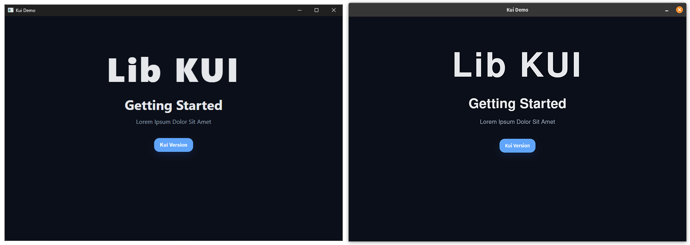

Project write-up
kui-desktop
A tiny C desktop framework for building webview-based apps with embedded HTML, CSS, JavaScript, images, a native bridge, and CMake resource generation.
Overview
kui-desktop is a small desktop framework written in C. It explores a lightweight alternative to heavier desktop app stacks by combining native C code with a webview frontend and embedded HTML, CSS, JavaScript, and image resources.
The goal is not to present a finished application platform. It is an in-progress framework and demo project focused on native/web interop, resource embedding, and a simple C API for creating a desktop window.
Architecture
The project is split between a static kui library and a demo executable.
include/kuiexposes the public C headers.kui/srcowns the framework implementation, webview lifecycle, resource lookup, JavaScript bridge callbacks, and filesystem/resource support.kui/js/prelude.jsis injected into the page and installs the smallkuiJavaScript API.runtimecontains the embedded demo HTML, CSS, JavaScript, and images.cmakecontains build-time resource embedding helpers.src/main.ccreates the demo window through the public API.
This keeps the demo application separate from the framework layer while still making the project easy to build and inspect.
Resource embedding
The CMake build generates C source from runtime assets. HTML, CSS, JavaScript, and images are compiled into the binary and exposed through a resource table instead of being loaded as loose external files.
The embedded prelude script resolves kui_src and kui_href attributes through native callbacks, returning blob URLs for bundled resources. This lets the frontend use normal browser concepts while the C side owns where the resources actually come from.
Native bridge
The framework binds native callbacks into the webview so JavaScript can call into C through a small helper:
kui.version()calls the native version callback.kui.native(name, payload)provides a general bridge for named native functions.- Resource resolution and JavaScript evaluation go through internal native callbacks.
The bridge is intentionally small, but it defines the kind of boundary needed for native desktop tools that still want a web-based UI layer.
Technical focus
- Building a C desktop framework around webview rather than a full browser shell.
- Embedding web assets into a native binary through CMake-generated C sources.
- Designing a small native-to-JavaScript bridge with JSON payloads.
- Keeping public headers, framework implementation, runtime resources, and demo code in separate areas.
- Working with cross-platform desktop constraints across Windows, Linux, and macOS webview backends.
